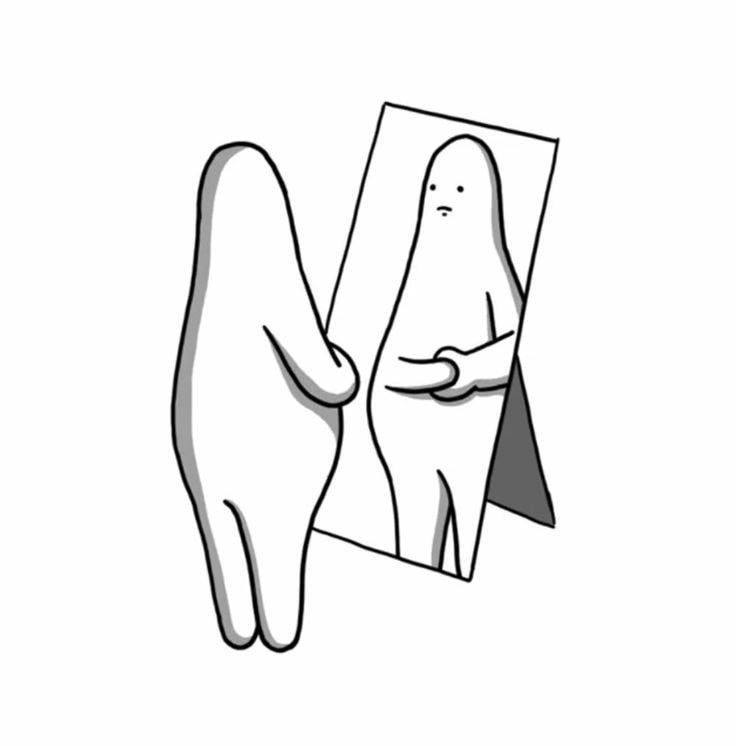
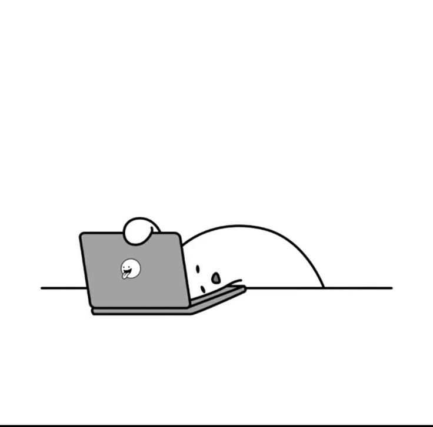
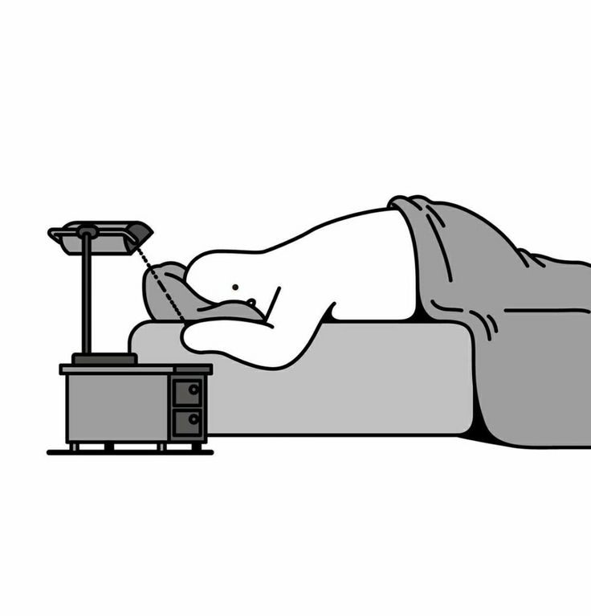
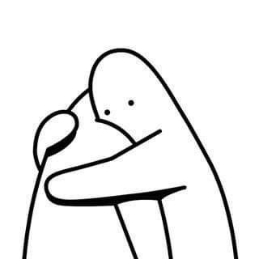

Coloca el mouse encima de la imagen para saber mas.
Si quieres saber mas. Pulsa en la imagen que gustes, para obtener mas infromacion.

Reconociendo las Señales
Cambios Físicos y Emocionales
El estrés y la ansiedad suelen manifestarse como tensión muscular, dolor de cabeza, cansancio extremo o irritabilidad.
Aprende a identificar estas señales tempranas para prevenir que afecten tu bienestar.

Entendiendo tus Emociones
Desbordamiento Emocional
Si te sientes abrumado, preocupado constantemente o con miedo sin razón aparente, podría ser un indicio de ansiedad.
Identificarlo te permitirá buscar ayuda o aplicar técnicas para manejarlo.

Alteraciones en la Rutina
Dificultades para Dormir o Concentrarte
Cambios en tus hábitos de sueño, dificultad para concentrarte o una sensación de estar "atascado" en tus actividades
pueden ser síntomas clave de estrés o ansiedad.

Cuándo Buscar Ayuda
Reconoce tus Límites
Si sientes que estas emociones están afectando tu calidad de vida o tus relaciones, es momento de buscar apoyo.